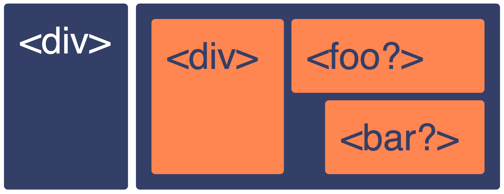
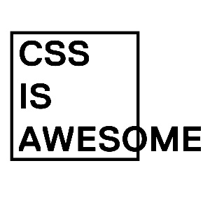
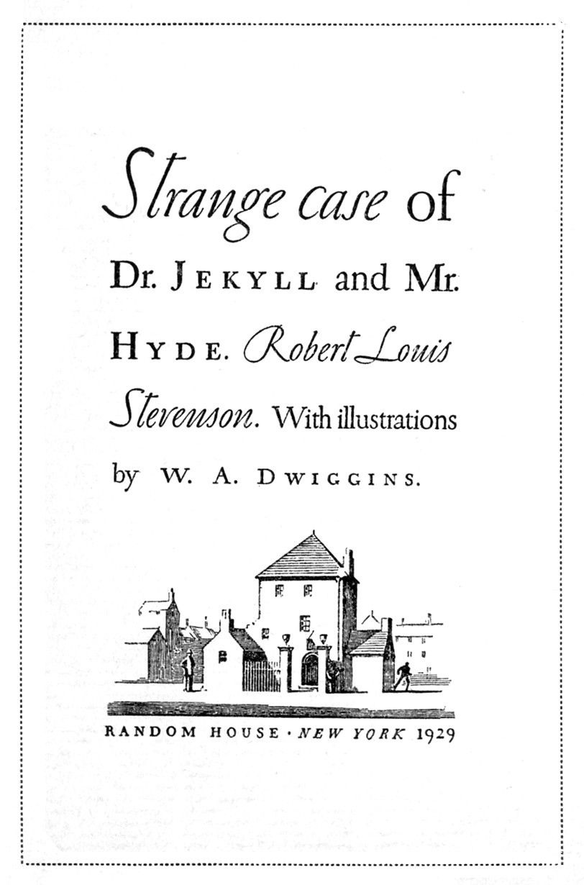

Did you know that the first ever webpage was completely responsive by default? And then we broke it with overcomplicated customizations. (Accessibility, Back to the Future | Bruce Lawson | Monki Gras 2019)
A bit about Technical debt of the HTML standard
HTML was written by Tim Berners-Lee originally in 1993 but was updated to version 4.01 in 1999 (the most used version) and also based on that the XHML1.0 standard was released. I remember first wondering what’s the meaning for <div>-tag introduced in HTML3.2 after 1997. W3C (World Wide Web Consortium) abandoned XHTML after version 2.0, but used all the functions that XHTML supports when designing HTML5. Usually, you need to know what features browsers support like with CSS3 and JavaScript ES6 and the same goes with HTML5, but luckily semantic elements of HTML5 have been widely supported for many years now.
Use semantic tags to communicate meaning instead of for presentation purposes
HTML elements are chosen by what the content is – not by their appearance. Simply put, HTML semantics are HTML tags that have a meaning.
<p> <h1> <form> <input> <textarea> <label> <select> <button> <blockquote> <q> <code> <em> <strong> <pre>
<sub> <sup> <table> <thead> <tfoot> <th> <td> <header> <nav> <main> <article> <section> <aside> <footer>
<address> <time> <data> <cite> <del> <ins> <abbr> <dfn> <figure> <figcaption> <kbd> <var> *<b> *<i>
* semantic in HTML5 (for ensuring accessibility use <em> and <strong>)
Common tags that don’t include semantic meaning in HTML are <div> and <span>. That doesn’t mean that they couldn’t have some semantic meaning in visual user experience or cognitive accessibility.
When we think about creating a webpage or a webapp we should be thinking about communicating. The visual appearance is a separately defined part of the result. A semantic HTML-page is providing meaningful information to the browser and other clients like screen readers, search engines and developers analyzing the source. So semantics go far beyond how the content looks on a page. The browser agent creates the basic visuals based on the semantics. It is common in today’s real world that the visual design needs to be something completely different from what the browsers default to. We can use technical languages, tools and libraries to get the desired visual styles. We can also just reset them to always behave in the same way. Don’t use HTML-tags in an HTML document (or layout and view of a webapp) just for their common display properties. Remember to separate that from your ideology and just think first about the semantic structure.
Prevent the most common mistakes – use CSS to modify visual appearance.
- Don’t use <h1> – <h6> -elements for text sizing.
- Dividing content with <div>’s says nothing about the structure or why contents are in separate containers.
- Only <li> -tags are allowed to be the direct descendants (rendered content) of <ul> or <ol>.
- <blockquote>, <ul> or <ol> should not be used for indentation.
- Don’t define margins and padding (spacing) with semantic HTML e.g. <p> </p>.
- <table> element represents tabular data not layout. Use <div>’s and <span>’s to implement visual layout and styling.

NOTE:
Authors are strongly encouraged to view the div element as an element of last resort, for when no other element is suitable. Use of more appropriate elements instead of the div element leads to better accessibility for readers and easier maintainability for authors.
— https://www.w3.org/TR/html5/grouping-content.html#the-div-element
It is worth mentioning that you cannot escape understanding the basics by using libraries and frameworks. Even Semantic-UI – advertised as using concise HTML – still has notable ongoing issues with accessibility. Wouldn’t you think it is also misleading to be called a fullstack developer or a web developer if you don’t know how to create a basic HTML document?

The key to Accessibility
The first key to accessibility – and even to user experience for people with disabilities – is learning to use semantics.
As a developer, you should be more focused on writing semantic HTML documents – not CSS (and creating a proper Design System so the developers can just stop writing custom CSS). Semantic HTML improves the readability of code – also closing tags tell you what they are closing. Understanding a new codebase can be easier if it uses the standards.

Maybe I should make sure that others can also see how I think of the content.
How about we make the web a bit more equal?
Spend a few moments during the Global Accessibility Awareness Day on May 16th 2019 learning and sharing the basics for accessible software development.
So how do you start? All the information needed is available for everyone on the wild wild web, but one of my favourite sites for related information is MDN Web Docs.